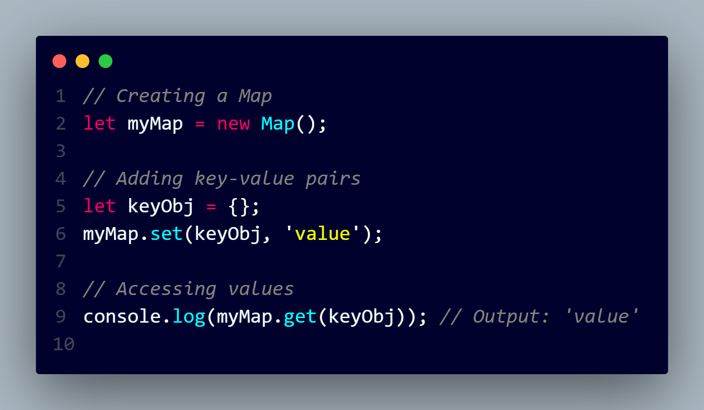

In JavaScript, a "keyed collection" typically refers to data structures that allow you to store and retrieve values using keys. There are several built-in keyed collections in JavaScript, and two of the most commonly used ones are:
Map:
Key Types:
Map allows any data type, including objects and primitives, as keys.
Memory Management:
Memory management is not tied to the map entries. Even if the keys are objects, the map entries won't prevent those objects from being garbage collected.
Iteration:
Iterating over a Map is straightforward, and you can easily loop through key-value pairs using methods like forEach.

WeakMap:
Key Types:
WeakMap only allows objects as keys. Primitives, like strings or numbers, are not allowed.
Memory Management:
Unlike Map, the entries in a WeakMap do not prevent the garbage collection of keys. If the only reference to a key is within the WeakMap, both the key and its associated value can be garbage collected.
Iteration:
WeakMap does not have methods for directly iterating over its keys or values. Iteration is not supported due to the potential lack of references to keys.
Use Cases:
WeakMap is useful when you want to associate additional data with an object without preventing that object from being garbage collected.

Set:
Values:
A Set is a collection of unique values, and it can store any data type, including primitive values and objects.
Memory Management:
The values stored in a Set are not tied to the set itself. If a value is stored in a set and becomes unreachable, it won't prevent the garbage collection of that value.
Iteration:
You can easily iterate over the elements of a Set, and it maintains the order of insertion.